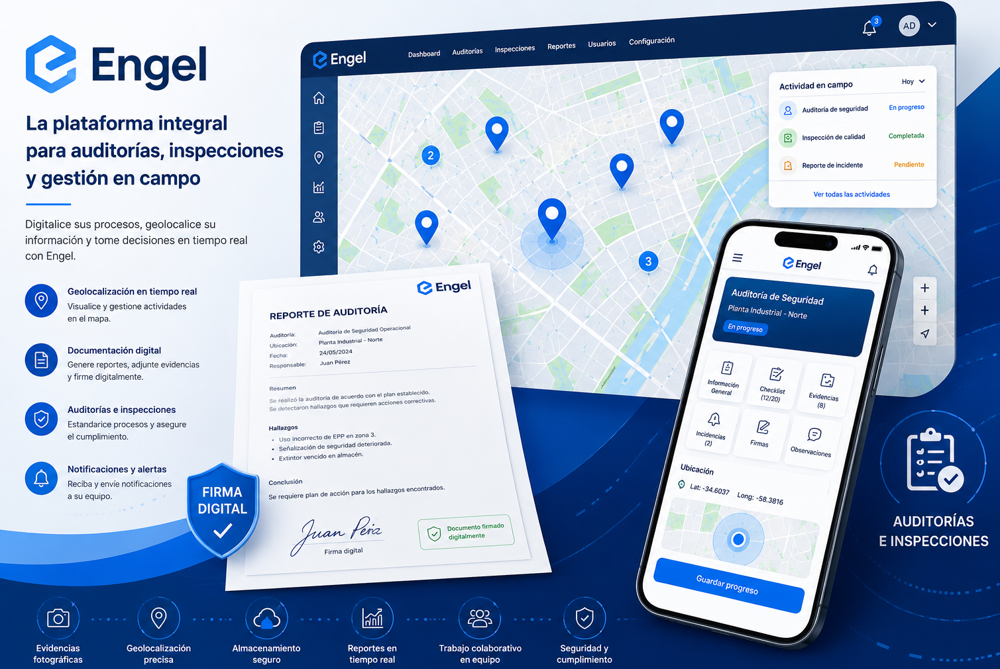

Visibilidad inmediata
Conozca el estado de cada actividad, responsable, ubicación e incidencia sin perseguir actualizaciones.
OPERACIONES EN CAMPO · BAJO CONTROL
Engel conecta auditorías, inspecciones, evidencias y equipos en una sola plataforma. Más trazabilidad para la dirección. Menos fricción para quienes trabajan en campo.
LA OPERACIÓN COMPLETA, EN UNA VISTA
Engel captura la información en el momento y lugar donde sucede, la organiza y la transforma en evidencia útil para actuar.

MENOS INCERTIDUMBRE. MÁS CONTROL.
Cuando la información llega tarde o incompleta, se multiplican los reprocesos, los riesgos y las decisiones a ciegas.
Engel crea un flujo digital verificable desde la asignación de una actividad hasta su cierre.
Conozca el estado de cada actividad, responsable, ubicación e incidencia sin perseguir actualizaciones.
Centralice fotografías, formularios, documentos y firmas digitales con un historial fácil de consultar.
Estandarice listas de verificación y criterios para que cada equipo trabaje con el mismo nivel de calidad.
Detecte tendencias, prioridades y desviaciones antes de que se conviertan en costos mayores.
UNA PLATAFORMA, MÚLTIPLES CAPACIDADES
Active las capacidades que su operación necesita y amplíe el alcance a medida que crece.
Formularios y listas de verificación adaptados a sus procesos.
Registro preciso de actividades y evidencias sobre el mapa.
Fotografías, documentos, observaciones y firmas en un solo expediente.
Hallazgos asignables con prioridad, responsable y seguimiento.
Información organizada para demostrar cumplimiento y acelerar decisiones.
Roles y responsabilidades claras para equipos de campo y oficina.
UN FLUJO QUE TODOS ENTIENDEN
Engel reduce la distancia entre lo que sucede en campo y lo que la organización necesita saber.
Conversemos sobre su procesoDefina actividades, formularios, prioridades y responsables.
Capture datos y evidencias desde el lugar de trabajo.
Revise avances, incidencias y cumplimiento en tiempo real.
Convierta el historial operativo en acciones y mejores prácticas.
DISEÑADO PARA OPERACIONES REALES
Engel se configura alrededor de su forma de operar, sus controles y sus indicadores.
01
Inspecciones de planta, seguridad, calidad y mantenimiento.
02
Control de flota, rutas, entregas, incidentes y activos.
03
Órdenes de trabajo, visitas, evidencias y aceptación del cliente.
04
Avances, supervisión, hallazgos y cumplimiento en obra.
UNA PROPUESTA COMERCIAL SIN FRICCIÓN
No necesita transformar toda la empresa de una vez. Definimos un alcance inicial concreto, configuramos Engel con su equipo y medimos el valor antes de ampliar.
RUTA DE IMPLEMENTACIÓN
Identificamos el proceso, usuarios, datos e indicadores clave.
Adaptamos flujos y formularios para validar el uso en campo.
Capacitamos al equipo y damos seguimiento a la adopción.
Extendemos módulos, áreas o sedes según sus prioridades.
HABLEMOS DE SU OPERACIÓN
Cuéntenos qué proceso necesita controlar. Prepararemos una demostración enfocada en su realidad operativa.